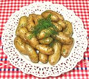

|
Potatoes with Dill- | ||||
| Makes: Effort: Sched: DoAhead: |
1 # ** 20 min Maybe |
Properly, these are made with "New Potatoes", which are potatoes so young and freshly dug the skins are like flaking paper - but these can rarely be had around here (see Note-1). | |||
|
1 1 1 --- ar |
# T --- |
Potatoes, tiny Dill bunch Salt -- Optional Butter |
Make - (20 min)
|